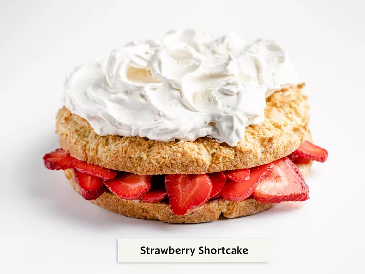

Back to home.
Odin Recipes
Strawberry Shortcake

Strawberry shortcake is a classic summertime treat. It's loaded with fresh, bright flavors and it's quick and easy to make!.
This delicious strawberry shortcake recipe will be your new go-to for all your strawberry dessert needs.
Ingredients
- 6 cups fresh strawberries
- ⅓ cup white sugar
- 2 ¼ cups all-purpose flour
- ¼ cup white sugar
- 1 tablespoon baking powder
- ¼ teaspoon salt
- ½ cup butter cold unsalted butter, cut into ½-inch pieces
- 1 large egg, lightly beaten
- ¾ cup half-and-half
- 2 teaspoons vanilla extract, divided
- 1 ½ cups whipped heavy cream
- ¼ cup powdered sugar
Preparation
- Gather the ingredients.
- Preheat the oven to 425 degrees F (220 degrees C). Grease an 8-inch cake pan with butter and lightly dust with flour.
- Slice the strawberries and toss them with 1/3 cup of white sugar. Set aside.
- Combine flour, 1/4 cup of white sugar, baking powder, and salt in a medium bowl;
cut in butter with a pastry blender or two knives until mixture resembles coarse crumbs. Make a well in the center of mixture;
add beaten egg, half-and-half, and 1 teaspoon vanilla. Stir mixture until just combined and no dry spots remain, being careful not to overmix.
- Spoon batter evenly into prepared cake pan.
- Bake in the preheated oven until a toothpick inserted into the cake comes out clean and top is golden brown, about 18 minutes.
Let cool partially in cake pan, about 10 minutes. Flip cake onto a clean work surface. \
- Meanwhile, beat heavy cream, powdered sugar, and remaining 1 teaspoon vanilla with an electric mixer on medium-high speed
until soft peaks form, about 3 minutes. Set aside.
- Cut partially cooled cake in half horizontally, making 2 layers; set top layer aside. Drain reserved strawberries in a colander
placed over a small bowl, reserving any juice. Brush strawberry juice evenly over top of bottom cake layer. Evenly arrange ½ of the drained
strawberries over bottom layer of cake.
- Spread ½ of whipped cream evenly over strawberries; place top cake layer over whipped cream. Top with remaining strawberries and whipped cream.
- Enjoy!
Back to home.